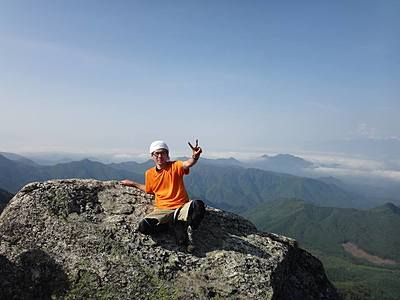
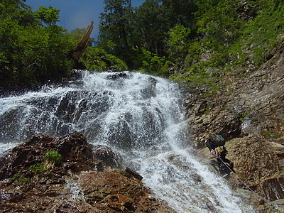
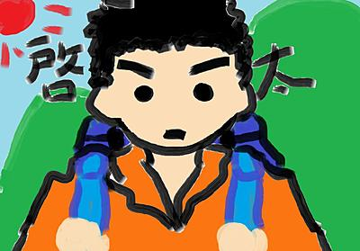

Members

一山 智弘
- 印象に残ったワンゲルメニュー
- 二郎くん
- 食べてみたい珍味
- キャビア、ドリアン、ネマガリダケ
- ワンゲルで学んだこと
- 無限等比級数を使った米の７等分法
- ワンゲルで一番つらかったこと
- 起床係
- 山で会ってみたいもの
- トトロ、こだま、メササメサメササー
- 今年の目標
- 富士山メロンパンを食べに行く
- ひと言
- ドビーは悪い子
大橋 宗史
- 行きたいところ
- 北海道
- 趣味
- サッカー観戦、鉄道旅行etc
- 好きなアプローチ
- 上越線鈍行
- 今年の目標
- 山スキーに挑戦
- 今後の目標
- 少林寺との運動会兼部の維持
- ひと言
- 秋から軍資金集めに奔走します


高市 雄太
- 趣味
- 野球観戦（巨人メイン）、地域行事（祭り、花火とか）を見たりやったり
- やってみたいこと
- 海外（先進国以外）でのんびりする
- 行ってみたいところ
- 宇宙
- 好きな球団
- 巨人、ヤクルト
- 今年の目標
- 冬の間に来年の夏山の資金集め
- ひと言
- 木に囲まれた山行が良い、限界上はただ寒いだけ
高辻 奏
- 好きな山行
- 晴れた山頂でコーヒーを飲む。
- 心に響いた漫画
- めぞん一刻
- 楽しかった山
- 夏合宿南ア悪沢岳:
- 闇を感じた山
- デポ山行聖隊、上高地研修
- ワンゲルで学んだこと
- 耐えていればすべて過ぎ去ること、テントの外で寝るという発想
- 今年の目標
- ワンゲル的思考から己を守る
- ひと言
- まいったね


陳 立峻
- 趣味
- サイクリング
- 好きな行動食
- 板チョコ、ヤマザキのコッペパン
- ワンゲルで行ってみたいところ
- 夏の笈ヶ岳
- 21歳の目標
- 厳冬期3000で一人旅
- 将来の夢
- 生計を立てる
- ひと言
- 痩せたい
豊島 理史
- 主な生息地
- 奥多摩、丹沢、上越
- 生息拡大候補地
- 八幡平、和賀、南会津
- 天敵
- 蛭、蜂、蝿、犬、熊
- 趣味
- 海外旅、チャリ、小説
- マイブーム
- 銭湯、喫茶店
- 好きな日本酒
- 福美人、都美人、南部美人
- ひと言
- あー・・・寒っ


廣長 啓太
- 行ってみたいところ
- 日本各地の沢、厳しい藪
- 思い出の山行
- 和賀合宿
- 嫌いなヤツ
- ネズミ
- 目標
- 山と勉強の両立
- ひと言
- 今年は冬山にたくさんいきたいな
村瀬 唯斗
- 好きな山行スタイル
- 3、4泊程度の軽めの縦走 or 山スキー
- 行きたい場所
- 南奥駈を通っての熊野本宮
- 愛着のある山
- 地元の六甲山
- 好きなゲーム
- Bioshock
- 好きなLisp
- Commin Lisp
- ひと言
- ドヤッ


茂木 聖
- 趣味
- 古墳巡り、寺社巡り、友達の家に夕飯をたかりに行くこと
- 好きな教官
- 火曜５限、比較地域史の鈴木直志先生
- 行ってみたいところ
- 大仙古墳
- やってみたいこと
- 理系トークにまぜてもらうこと
- 今年の目標
- 下宿に巣くう害虫たちとの共存共栄
- ひと言
- 一緒に群馬ネタまたは文系トークで盛り上がってくれる方、募集してます。